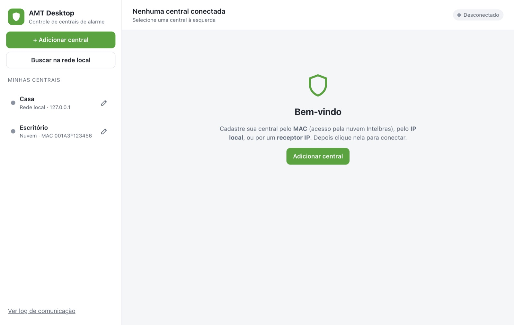
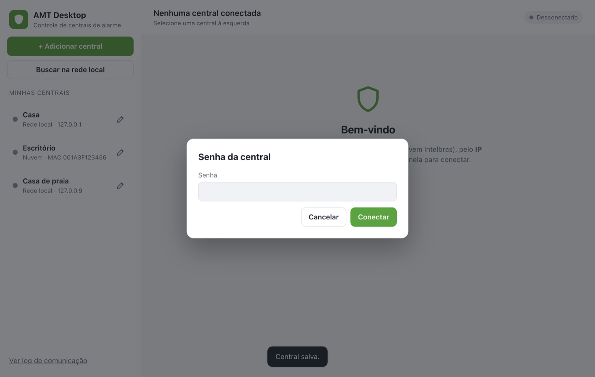
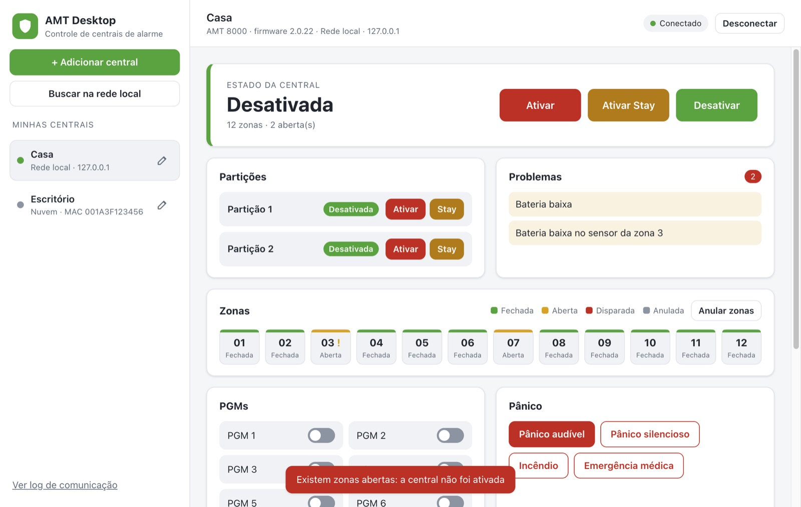
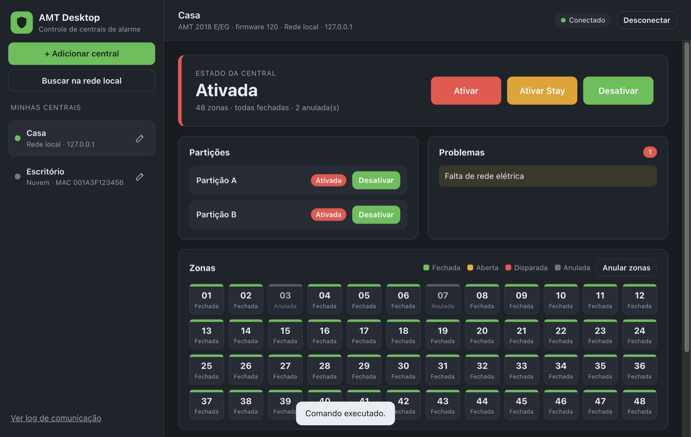

Programa de computador
AMT Desktop
Controle de centrais de alarme Intelbras da linha AMT pelo computador com Windows.
Disponível sob solicitação.
SituaçãoProjeto independente
Versão1.0.0
PlataformasWindows 10 e 11
PreçoGratuito (licença MIT)
O que faz
Recursos principais
- Faz no computador o mesmo que o app de celular AMT Mobile: ativar, desativar, anular zonas, PGMs e pânico.
- Conexão pela nuvem (MAC da central), pela rede local (IP) ou por receptor IP.
- Senha salva de forma criptografada; log de comunicação para suporte.
- Modelos AMT 8000, 2018, 2010, 2110, 2118, 3010, 1000 Smart, 1016 Net, 4010 Smart, ANM 24 Net e outros.
TelasTela inicial · toque para ampliar Conectando a uma central · toque para ampliar Anular zonas · toque para ampliar Central ativada (tema escuro) · toque para ampliar
Como é o AMT Desktop








Dados fictícios.
Manual
Como instalar e começar
- Escolha o portátil (
AMT-Desktop-Portatil-1.0.0.exe, sem instalar) ou o instalador (AMT-Desktop-Setup-1.0.0.exe). - Na primeira vez: Mais informações → Executar assim mesmo.
- Clique em Adicionar central, escolha a forma de acesso e informe a senha de acesso remoto.
Importante: Programa independente, sem vínculo com a Intelbras. Testado com simulador; ainda não testado com central real.
Dúvidas na primeira abertura? Veja as orientações gerais.